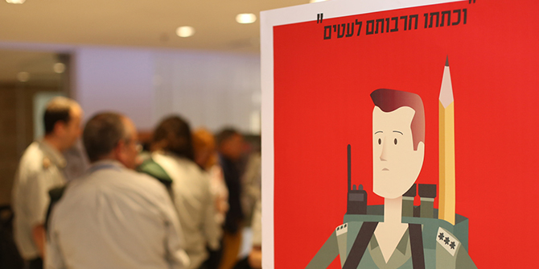

ביום רביעי 14 ביוני 2017, התכנסו בוגרי התוכנית ועמיתי המחזור הנוכחי ליום לימוד חגיגי לרגל סיומה של שנת העשור להיווסדה של תוכנית מנדל למנהיגות חינוכית בצה"ל.
האירוע, שבו השתתפו מעל ל-150 בוגרים ועמיתים, נפתח בתערוכת פוסטרים המתארים באופן חזותי את הפרויקטים של עמיתי מחזור י"א. לאחר מכן, התכנסו המשתתפים לסדרת הרצאות שבהן הוצגו נקודות מבט ביקורתיות על צה"ל משלוש זוויות: תקשורתית, כלכלית וחרדית. את המושב כיבדו בנוכחותם קצין החינוך היוצא תא"ל אבנר פז צוק, קצין החינוך הנכנס תא"ל צביקה פייראיזן, נשיא קרן מנדל פרופ' יהודה ריינהרץ, מנכ"ל קרן מנדל-ישראל מר משה ויגדור ומנהל מכון מנדל למנהיגות ד"ר אלי גוטליב. לאחר שסגן יושב ראש הקרן, מר סטיב הופמן, בירך את המשתתפים בשם הקרן, עלו לבמה מנהל התוכנית בעבר, ד"ר מוטי שלם, ומנהלת התוכנית הנוכחית, ד"ר חוה שיין. ד"ר שלם סיפר על החזון שראה לנגד עיניו פרופ' מרדכי ניסן ז"ל בהקמת התוכנית וד"ר שיין תיארה את המאמצים ליצור תוכנית מאתגרת שתתרום למשתתפיה, לצה"ל ולמדינה.
בסיום מושב ההרצאות ודברי הברכה התחלקו המשתתפים לקבוצות קטנות לשם עיון מעמיק במגוון סוגיות חינוכיות בצה"ל ובמדינה ולמעגלי-שיח שבהם למדו מניסיונם של מנהיגים חברתיים בולטים. אחרי מפגש מחזורים, התכנסו מחדש המשתתפים לפאנל שבו סיפרו מנכ"לית משרד החינוך היוצאת גב' מיכל כהן ופרופ' יובל אלבשן מהקריה האקדמית אונו על הצלחותיהם וכישלונותיהם בהובלת שינויים בחינוך ובחברה בישראל. היום נחתם בהופעה מוזיקלית שכללה שיחה על מנהיגות ומודעות חברתית בשדה התרבות.

{kind=link}